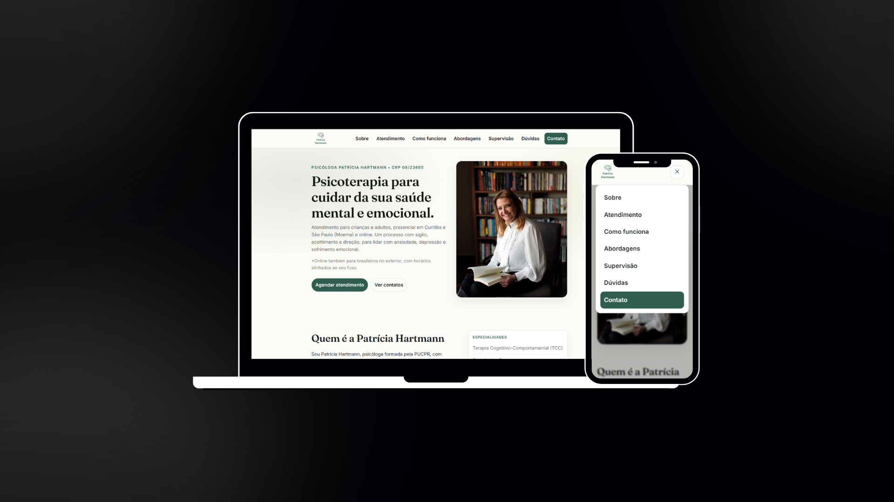
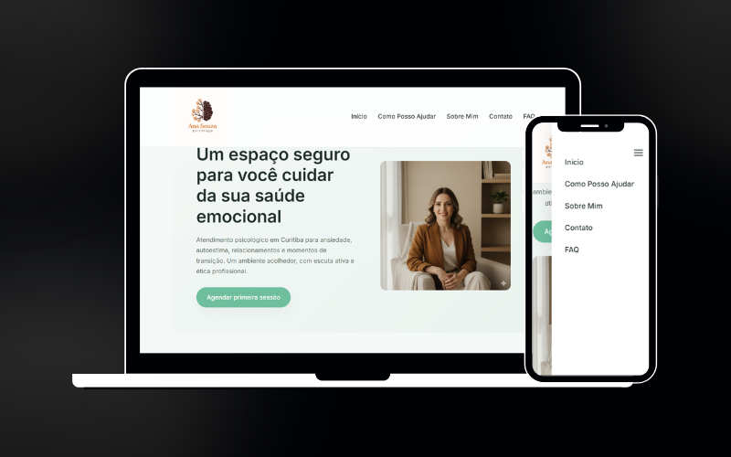
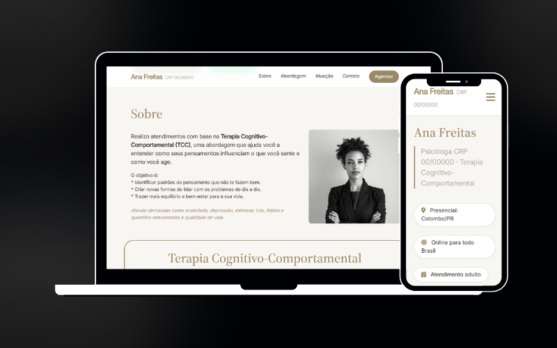
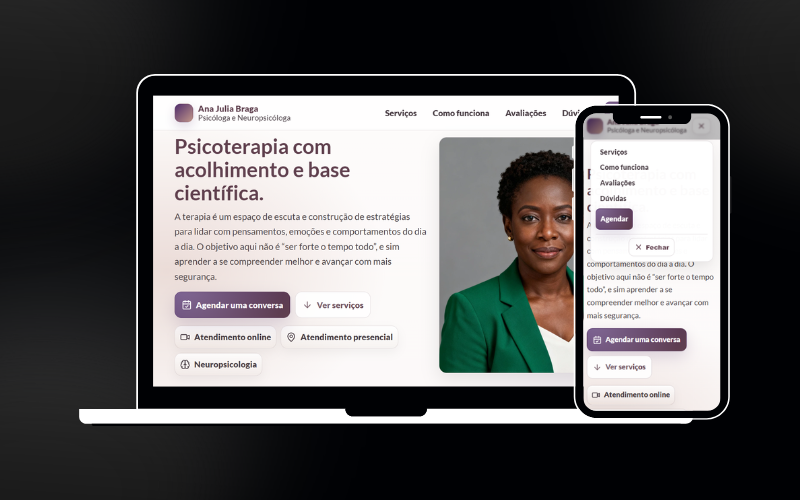
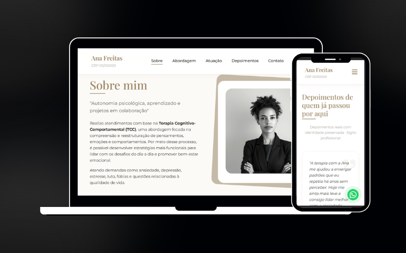

Desenvolvimento
Desenvolvo e entrego seu site completo, rápido e funcional — você foca no seu negócio.
Crio sites profissionais para psicólogas que querem ser encontradas, e conquistar mais pacientes, sem complicação ou termos técnicos.
Solicitar orçamento
Sou desenvolvedora frontend especializada em criar sites para psicólogas. Entendo que você escolheu a psicologia para ajudar pessoas — não para lidar com tecnologia.
Por isso, cuido de tudo: do design à publicação no Google. Você recebe um site profissional, que transmite confiança às suas futuras pacientes e aparece quando elas pesquisam por atendimento.
Vamos construir juntos a presença online que a sua prática merece?
Desenvolvo e entrego seu site completo, rápido e funcional — você foca no seu negócio.
Experiência perfeita em qualquer tela: celular, tablet ou desktop.
Estrutura estratégica para seu site ganhar visibilidade no Google.
Configuração, publicação e suporte para seu site ficar seguro e no ar.
Sem necessidade de reuniões demoradas. Você responde algumas perguntas simples sobre sua especialidade, sua abordagem e como prefere ser contactada. Leva menos de 5 minutos.
Com base nas suas respostas, desenvolvo o design e os textos do seu site — você não precisa escrever nada do zero. Cuido de tudo para transmitir o acolhimento que sua prática merece.
Te apresento o site, esse é o momento de sugerir ajustes — cores, textos, ordem das seções.
Só seguimos quando você estiver satisfeita.
Publico o site com domínio configurado, otimização SEO e botão de WhatsApp em destaque. Em até 14 dias úteis, suas pacientes já conseguem te encontrar online.
Pronta para dar esse passo?
Quero meu site
Site institucional completo com apresentação profissional, abordagens terapêuticas e agendamento via WhatsApp. Estrutura otimizada para SEO e GEO.




Nenhum projeto nessa categoria ainda.
Todos os planos incluem design exclusivo e código sob medida.
Para dar o primeiro passo online com tudo no lugar, sem complicação.
Site completo, no ar e pronto para atrair pacientes — inclusive pelas IAs.
Para psicólogas que querem se destacar e ter suporte depois da entrega.
Não tem certeza qual plano é o ideal? Me manda uma mensagem e te ajudo a escolher sem compromisso.
Não foi possível carregar os artigos agora. Tente novamente em instantes.
Sim. Quando alguém pesquisa por "psicóloga em [cidade]" no Google, os resultados privilegiam sites com boa estrutura. Além disso, um site profissional transmite credibilidade e permite que a futura paciente conheça sua abordagem antes mesmo do primeiro contato.
Landing pages ficam prontas em até 7 dias úteis. Sites completos em até 15 dias úteis após a aprovação do briefing. O prazo depende do tempo de resposta e aprovação da sua parte também.
Sim. Todo site inclui SEO técnico: título e descrição otimizados, estrutura de headings correta, schema markup, imagens com alt text e código limpo para boa performance. O objetivo é você ser encontrada no Google sem precisar pagar anúncios.
Não. Cuido de tudo: do design à publicação, incluindo domínio e hospedagem. Após a entrega, você recebe orientações simples para solicitar atualizações sem precisar aprender a programar.
O site institucional é uma presença completa: sobre você, abordagens, serviços e contato — ideal para construir autoridade. A landing page é uma única página focada em converter visitas em consultas — ideal para quem está começando ou quer uma solução rápida.
Sim. Todos os projetos são desenvolvidos com design responsivo, garantindo uma experiência perfeita em celular, tablet e desktop — essencial, já que a maioria das pessoas pesquisa por psicólogas pelo smartphone.
Entre em contato pelo WhatsApp ou pelo formulário. Fazemos uma conversa rápida de briefing para entender suas necessidades e você recebe uma proposta personalizada com escopo, prazo e valor. Retorno em até 24 horas.
Se você possui conteúdo em seu Instagram, é possível agilizar o processo, escolha como prefere começar. Pode ser rápido como mandar um @, ou com mais detalhes se preferir.
Me manda o seu @ do Instagram. Com ele consigo ver sua bio, abordagem, estilo visual e já começo a pensar no seu site. Leva menos de 10 segundos.
Você será redirecionada para o WhatsApp com o @ já preenchido na mensagem.
Prefere detalhar mais sobre a sua prática, abordagem e o que espera do site? O formulário leva cerca de 3 minutos e me ajuda a preparar uma proposta bem alinhada.
Preencher o formulárioRetorno em até 24 horas após o envio.